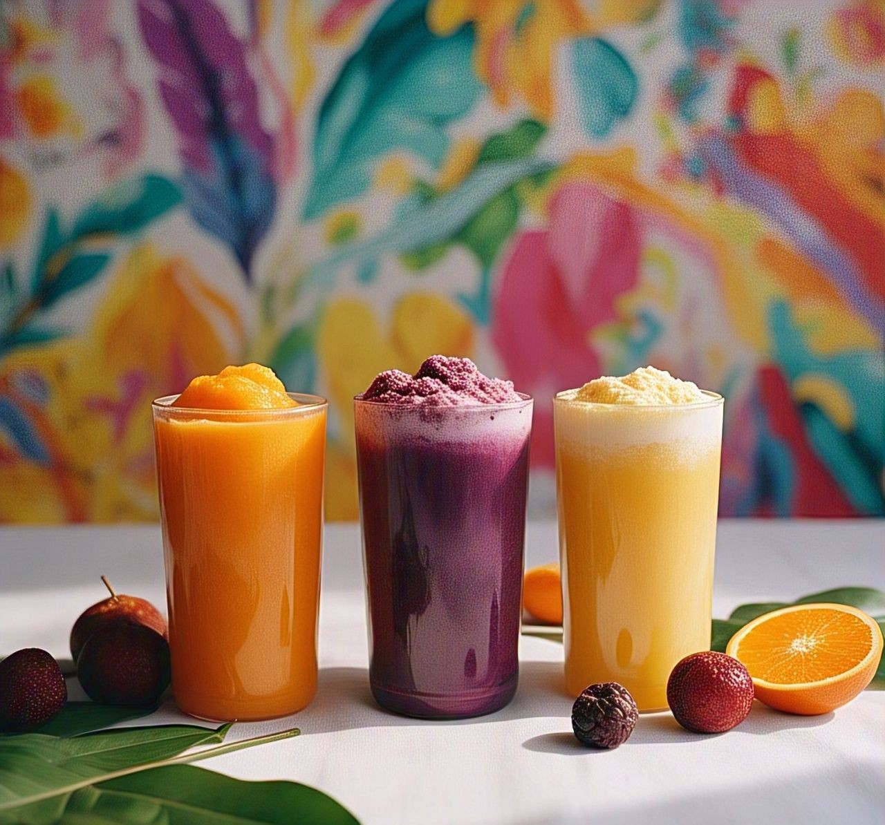

Enjoy various Milkshakes
Milkshakes
Ingredients:
- 1 cup chilled milk
- 1/2 cup chopped fruits (banana, mango, strawberry)
- 1 tbsp honey or sugar
- 4-5 ice cubes

Recipe:
- Add chopped fruits, milk, and honey/sugar to a blender.
- Blend until smooth and creamy.
- Add ice cubes and blend again for a chilled texture.
- Pour into a glass and serve immediately.